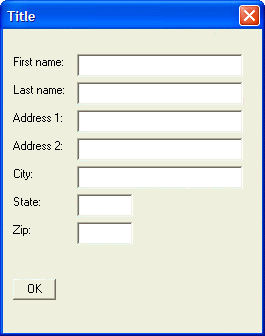

Address Dialog - Margins
Margins are controlled with the {xmargin=} and {ymargin=} commands which specify the right/left margins of the dialog box, and the top/bottom margins of the dialog box.
The syntax for commands is:
{Ymargin=top,bottom} {Xmargin=left,right} |
For example, the following script adds a margin of 2 rows on the top and bottom, 2 columns on the left, and 4 columns on the right of the dialog:
result=ui_dlg_box("Title",<<%dlg% {ymargin=2,2} {xmargin=2,4} {ysize=2} First name:| [.32firstname]; Last name:| [.32lastname]; Address 1:| [.32address1]; Address 2:| [.32address2]; City:| [.32City]; State:| [State]; Zip:| [Zip]; {lf}; %dlg%) |
This script creates this dialog:

Lesson 3: Address Dialog - Margins
Next
Limitations
Desktop applications only.